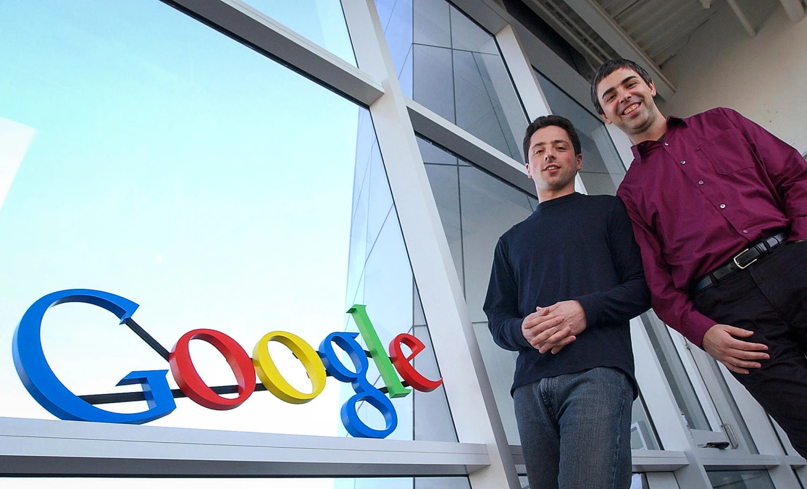

THE LEGACY OF LARRY PAGE AND SERGEY BRIN IN
COMPUTER SCIENCE AND TECHNOLOGY

Larry Page and Sergey Brin played a vital role in Google’s technological advances.
Their invention of the PageRank algorithm not only improved search engine technology but also set a new standard for getting information on the web.
Their invention of Google and innovations have had an impact on the standards of the tech industry and have promoted innovation across the industry, leading to the development of new technologies and the advancement of current ones.
They have transformed the way people access and use information, and it has become an essential part of daily life for billions of people, providing quick access to a vast amount of information through Google.
An interview with Larry Page and Sergey Brin discussing the mission and goals of creating Google.